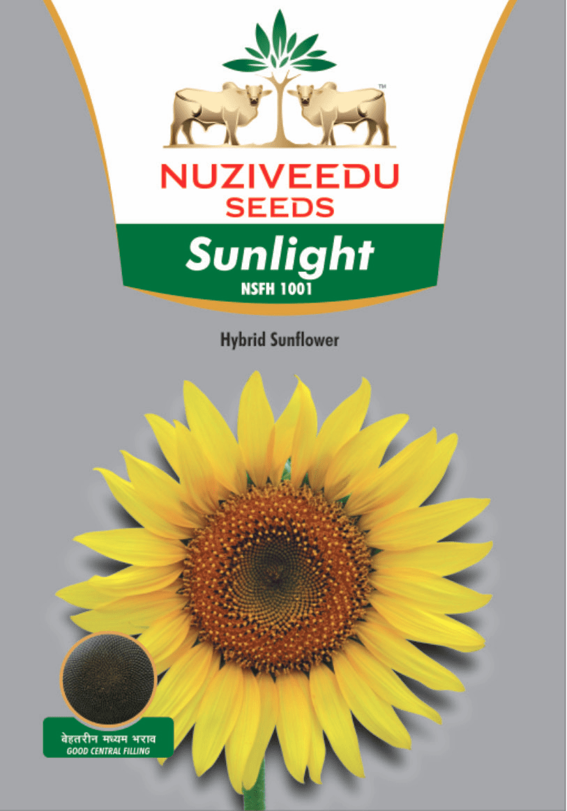

| Morphological Characters | |
|---|---|
| Hybrid Character: | Sunlight(NSFH - 1001) |
| Duration (Seed to Seed) | Late (90 -110 days) |
| Seed Rate (Kg/ha) | 5-6 |
| Plant Height (cm) | 160-180 |
| Head diameter (cm) | 16.0-18.0 |
| Head Shape | Convex |
| Head Orientation | Bent-Semi bent |
| Grain Colour | Black bold grains |
| Disease/ Pests | Moderately Resistant to Alternaria leaf (resistance/ tolerance to spot, downy mildew, powdery mildew, specific diseases/pests) leaf eating caterpillars |
Season/ Sowing Time:
|
|